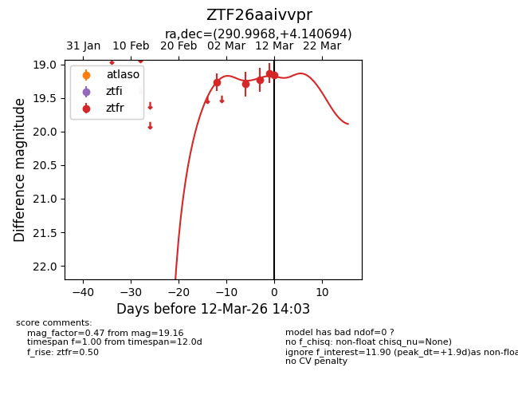
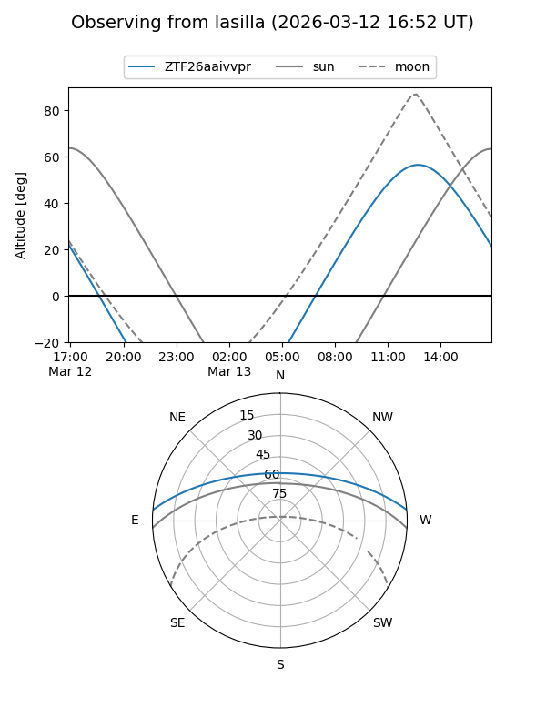
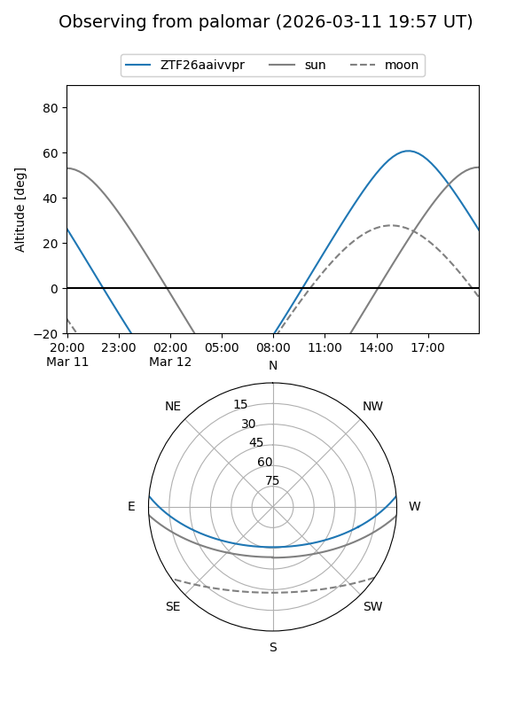
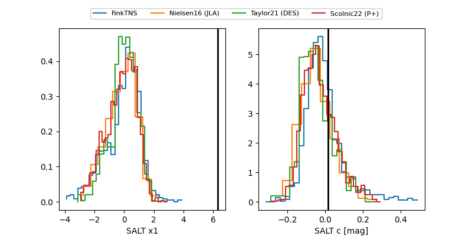

ZTF26aaivvpr
Target ZTF26aaivvpr at 2026-03-12 14:05
Aliases and brokers:
FINK: link
Lasair: link
ALeRCE: link
alt names
ZTF26aaivvpr (ztf,fink_ztf)
Coordinates:
equatorial (ra, dec) = 290.9968,+4.14069
equatorial (HMS+DMS) = 19:23:59.22,+04:08:26.50
galactic (l, b) = (40.3549,-5.32011)
Flags:
Photometry:
last ztfr=19.16
5 ztfr detections
Lightcurve

Visibility


Additional plots
